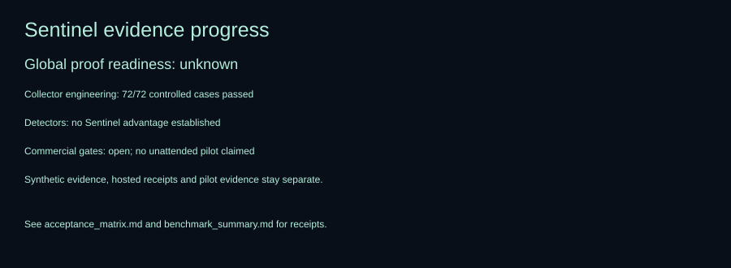

Global research readiness: unknown. Collector milestone passed locally. Commercial qualification remains open.

Measured report · Acceptance gates · Archive receipt
| Method | TP / FP / FN | Precision | Recall | False incidents / benign target-day | Mean delay s | |---|---:|---:|---:|---:|---:| | gate | 24 / 12 / 2 | 0.667 | 0.923 | 1.414 | 0.0 | | sentinel_plus_gate | 24 / 12 / 2 | 0.667 | 0.923 | 1.414 | 0.0 | | ewma | 26 / 12 / 0 | 0.684 | 1.000 | 1.414 | 69.2 | | cusum | 26 / 14 / 0 | 0.650 | 1.000 | 1.650 | 69.2 |
No live data, model calls or scheduling run in this dashboard.